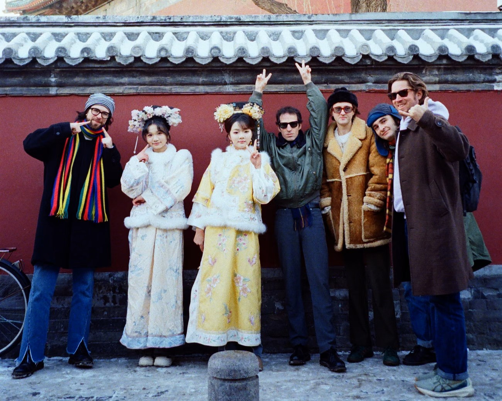

The Cure emociona al mundo alternativo con dos Grammy
Por Daniela Rojas · 5 de febrero, 2026
▲ Robert Smith y The Cure en la 68ª gala de los Grammy — fuente: press kit oficial
Nadie lo esperaba —o quizás todos lo esperábamos sin atrevernos a decirlo en voz alta—. En la noche del 5 de febrero de 2026, durante la 68ª edición de los premios Grammy celebrada en el Crypto.com Arena de Los Ángeles, The Cure se alzó con dos galardones que sacudieron a la industria musical: Mejor Álbum de Rock Alternativo por Songs of a Lost World, y el Premio Grammy al Artista Legado, una categoría creada para reconocer trayectorias que han redefinido un género de manera sostenida a lo largo de décadas.
Robert Smith, con los ojos enrojecidos y la voz quebrada por la emoción, caminó lentamente hasta el micrófono acompañado del resto de la banda. La sala, poblada de artistas pop y urbanos, se puso de pie en una ovación que duró casi dos minutos. "Este premio no es para nosotros", dijo Smith con su acento inglés inconfundible. "Es para todos los que se sintieron raros, solos y diferentes alguna vez. Para los que encontraron en nuestra música un lugar donde existir sin vergüenza."
"Este premio es para todos los que se sintieron raros, solos y diferentes alguna vez. Para los que encontraron en nuestra música un lugar donde existir sin vergüenza."
La candidatura de Songs of a Lost World había generado controversia desde el principio. Publicado en octubre de 2024 tras dieciséis años de silencio discográfico, el álbum fue recibido por la crítica especializada con elogios sin reservas, pero muchos apostaban a que el conservadurismo habitual de la Academia de la Grabación lo dejaría fuera del palmarés. Se equivocaron.
El disco —construido sobre capas de sintetizadores graves, guitarras reverberantes y la voz inconfundible de Smith— aborda el duelo, la pérdida y el paso del tiempo con una honestidad que pocos artistas se permiten a estas alturas de su carrera. Temas como Alone y And Nothing Is Forever pasarán a la historia no solo como canciones extraordinarias, sino como documentos de lo que significa envejecer con dignidad artística intacta. Para la escena alternativa global, el reconocimiento tiene un peso simbólico que supera cualquier estadística de streaming: The Cure nunca modificó su sonido para encajar en tendencias, nunca cedió a las presiones del mercado, y sin embargo están aquí, cuarenta años después, con dos Grammy en las manos.
Giras y Eventos
Peaches encabezará el cartel de The Great Escape 2026
Por Marco Fuentes · 14 de febrero, 2026
▲ Peaches durante su gira europea — foto de archivo, Berlín 2025
El festival The Great Escape, celebrado cada año en Brighton y reconocido internacionalmente como uno de los escaparates más importantes del talento emergente y alternativo, acaba de confirmar su cartel más ambicioso hasta la fecha. Peaches, la artista y productora canadiense Merrill Beth Nisker, será la headliner de la edición de mayo de 2026, clausurando el festival con lo que sus representantes ya anuncian como "un show que redefinirá lo que es posible hacer en un escenario."
La elección no es casualidad ni capricho: es una declaración de intenciones. Considerada pionera del electroclash y figura central de la cultura queer underground desde los primeros años 2000, Peaches regresa a los grandes festivales tras un período de trabajo centrado en el teatro experimental y las instalaciones de arte sonoro. Su presencia en The Great Escape responde a la nueva dirección del festival: un espacio que quiere celebrar tanto lo que está surgiendo ahora como lo que marcó un antes y un después en la historia de la música independiente.
"No vuelvo a los festivales para hacer nostalgia. Vuelvo porque tengo cosas nuevas que decir y maneras nuevas de molestar a la gente."
Sus palabras agotaron en horas las entradas de la jornada de clausura del festival. El resto del cartel apunta en la misma dirección subversiva: la banda post-punk nigeriana-londinense Dry Cleaning, la productora experimental sudcoreana Yaeji, y propuestas latinoamericanas como Gepe y Nathy Peluso en su vertiente más cruda. Para quienes no puedan viajar a Brighton, el festival ofrecerá transmisiones en directo con acceso gratuito para los primeros cincuenta mil registros.
Artistas Emergentes
Shyeye lanza "Drowning" y confirma que es la artista a seguir en 2026
Por Sofía Mendoza · 17 de febrero, 2026
▲ Shyeye durante la sesión de grabación de "Drowning" — foto: archivo personal
Con apenas 21 años, tres sencillos en su historial y cero apariciones en televisión, Shyeye ya genera una expectativa que pocas artistas emergentes logran antes de lanzar un álbum completo. Su nuevo single "Drowning", publicado el pasado 15 de febrero, es un ejercicio minimalista de dream pop que desafía todas las convenciones del formato: guitarras etéreas procesadas con reverb a máxima saturación, voz susurrada que parece venir de otra habitación, y una producción que suena literalmente como si hubiera sido grabada bajo el agua.
Lo que hace especial a "Drowning" no es solo su sonido —aunque el sonido es extraordinario—, sino la coherencia con la que Shyeye construye su universo artístico. Cada elemento forma parte de un lenguaje visual y sonoro propio que pocas artistas de su edad tienen la claridad de mantener. No hay concesiones: no hay un puente más brillante, no hay una subida de intensidad calculada para los algoritmos, no hay un giro pop en el último minuto. Solo la canción y su mundo.
"Grabé 'Drowning' en una noche, después de quedarme mirando el techo tres horas sin poder dormir. No pensé que nadie la iba a escuchar."
El video oficial, dirigido por ella misma con una cámara analógica Super 8, acumula más de 400.000 reproducciones en 48 horas sin ningún apoyo de label ni campaña de marketing. Las imágenes —granuladas, casi oníricas, filmadas en una piscina vacía a las tres de la mañana— complementan la canción con una precisión que sorprende en una realizadora primeriza. Shyeye creció en la costa atlántica colombiana y se mudó a Bogotá a los dieciséis para estudiar producción musical. Varios sellos independientes europeos ya habrían contactado a su representación, y una pequeña gira por Bogotá, Medellín y Ciudad de México está confirmada para marzo.
Galería
The Cure — Grammy 2026Peaches — Berlín 2025Shyeye — sesión fotográfica

The Great Escape — BrightonEscena indie — Bogotá 2026